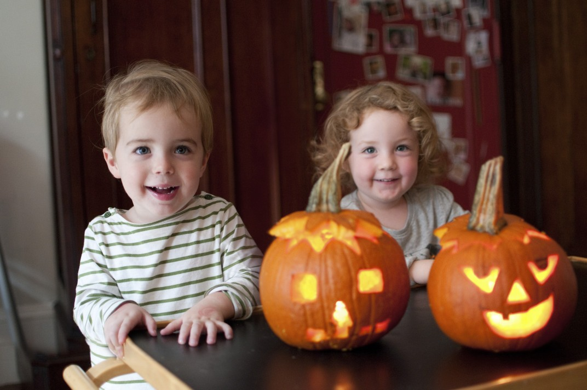

Option2
Option3
All about Timmy:
I'm a young and ambitious kid! When I grow up I want to be a doctor, a lawyer and a baseball player!
-
Awesome Camp Trip
4th Grade trip The 4th graders went on a camping trip with one another. They developed skills in teamwork, leadership, and survival. In addition, an appreciation for what we already have was developed from the harsh conditions while camping. Many students reported they would be interested in future camping trips and had a positive experience.
The 4th graders went on a camping trip with one another. They developed skills in teamwork, leadership, and survival. In addition, an appreciation for what we already have was developed from the harsh conditions while camping. Many students reported they would be interested in future camping trips and had a positive experience.
-
Baseball
7th Graders vs 8th Graders The 7th and 8th graders duked it out in a close game of baseball. The 8th graders pulled ahead early, but the 7th graders made a comeback towards the end to secure the victory. Today the younger children are victorious over the older and more seasoned students here at Woods Family Foundation!
The 7th and 8th graders duked it out in a close game of baseball. The 8th graders pulled ahead early, but the 7th graders made a comeback towards the end to secure the victory. Today the younger children are victorious over the older and more seasoned students here at Woods Family Foundation!
-
Pumpkin Carving
5th Graders Learn Carving 5th graders gathered today after class to carve pumpkings with mentors! Knives and proper safety was taught to all participating students. Many cute and adorable pumpkins were carved! Alicia carved the best pumpkin and won a gift card
-
Park Trip
Children walk around park Today we escaped the confines to enjoy the beautiful Chicago weather! Children walked and several rounds of icebreakers were played between children. Hard to beat new friendships, good weather, and the beautiful weather Chicago has to offer!
Today we escaped the confines to enjoy the beautiful Chicago weather! Children walked and several rounds of icebreakers were played between children. Hard to beat new friendships, good weather, and the beautiful weather Chicago has to offer!
Hey {{user.name}}, tell us about your experience :)
{{sentiment}}
Thank you for your response :)
Baseball, soccer, reading, sleeping, memes mode_edit